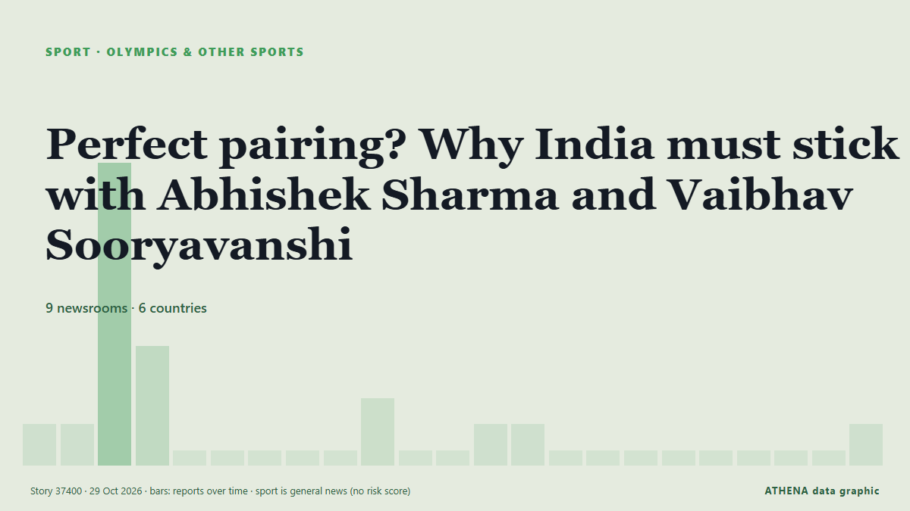

الرياضةبطاقة عنوان. 9 وسيلة إعلام في 6 دولة التغطية: تقارير كل 2 ساعات
Perfect pairing? Why India must stick with Abhishek Sharma and Vaibhav Sooryavanshi

While Abhishek’s century was the headline act, Sooryavanshi’s fearless approach set the tone. من Times of India
باختصار
نشرته بشكل مستقل 9 مصادر في 6 دول منذ 27 أكتوبر، وأول من نشره Express Tribune؛ والتغطية تتراجع. تُؤرشف أخبار الرياضة والثقافة دون تقييم للمخاطر. الثقة 88٪ (مرتفعة)، وعدد المصادر المستقلة المؤكِّدة: 9، بمتوسط موثوقية للمصادر يبلغ 74٪.
ما الذي تغيّر: 3 تقارير جديدة من 2 غرف أخبار خلال 24 ساعة حتى 29 أكتوبر.
العنوان الأول: Abhishek Sharma and Vaibhav Sooryavanshi lead record T20 chase as India win NZ series
تُعرض العناوين بالإنجليزية كما نُشرت.
نظرة سريعة
3.9الأهمية
—بدون تقييم للمخاطر
88%الثقة
اختير وقُيِّم وكُتب وفق منهجية ATHENA المنشورة. لا يتدخل أي محرر في الأحداث بعينها. كيف يُنتَج ›
| 27 Oct 06:08 UTC | 1 |
|---|---|
| 27 Oct 08:08 UTC | 1 |
| 27 Oct 10:08 UTC | 11 |
| 27 Oct 12:08 UTC | 4 |
| 27 Oct 14:08 UTC | 0 |
| 27 Oct 16:08 UTC | 0 |
| 27 Oct 18:08 UTC | 0 |
| 27 Oct 20:08 UTC | 0 |
| 27 Oct 22:08 UTC | 0 |
| 28 Oct 00:08 UTC | 2 |
| 28 Oct 02:08 UTC | 0 |
| 28 Oct 04:08 UTC | 0 |
| 28 Oct 06:08 UTC | 1 |
| 28 Oct 08:08 UTC | 1 |
| 28 Oct 10:08 UTC | 0 |
| 28 Oct 12:08 UTC | 0 |
| 28 Oct 14:08 UTC | 0 |
| 28 Oct 16:08 UTC | 0 |
| 28 Oct 18:08 UTC | 0 |
| 28 Oct 20:08 UTC | 0 |
| 28 Oct 22:08 UTC | 0 |
| 29 Oct 00:08 UTC | 0 |
| 29 Oct 02:08 UTC | 1 |
لماذا هذه الأرقام
الأهمية
الامتداد — الدول التي تغطيه
الاتساع — وسائل إعلام مختلفة
الجِدّة
التنوع — المناطق وأنواع وسائل الإعلام
الخطر
—
الثقة
وسائل إعلام مستقلة
موثوقية المصادر
الدول
الاستقرار
اتساق التصنيف
التغطية — من نشر الخبر ومتى
العنوان كما نُشر · يفتح الأصل- Express Tribune · باكستان · PakistanAbhishek leads India to series win
- Indian Express · الهند · IndiaAbhishek hits 35-ball hundred, breaks Kohli’s record for most T20 tons among Indians
- Gulf News · الإمارات العربية المتحدة · United Arab EmiratesYuvraj Singh trolls Abhishek Sharma as Indian batter smashes 11 sixes against New Zealand
- Times of India · الهند · India118/0 in 36 balls! India script jaw-dropping record in 3rd T20I win over NZ
- Gulf News · الإمارات العربية المتحدة · United Arab EmiratesVaibhav Sooryavanshi's 45 and Abhishek Sharma's 113 help India smash T20I world records against New Zealand
- Times of India · الهند · IndiaIND vs NZ: Ton-up Abhishek Sharma surpasses Virat Kohli in major T20 record
- CNA (Channel NewsAsia) · سنغافورة · SingaporeAbhishek ton flattens New Zealand as India seal T20 series
- Al Jazeera English · قطر · QatarAbhishek Sharma hits ton as India beat New Zealand by 6 wickets in 3rd T20
- Times of India · الهند · India'Apne single bhi le liye': Yuvraj makes cheeky Abhishek Sharma admission
- Business Recorder · باكستان · PakistanAbhishek ton flattens New Zealand as India seal T20 series
- Times of India · الهند · IndiaAbhishek, Sooryavanshi set new world record in India's 3rd T20I
- Indian Express · الهند · IndiaToday News Headlines for School Assembly, October 28, 2026: Cyclone Arnab makes landfall, eastern states see heavy rainfall
- The National · الإمارات العربية المتحدة · United Arab EmiratesAbhishek Sharma and Vaibhav Sooryavanshi lead record T20 chase as India win NZ series
- Times of India · الهند · India'It was just me and Sooryavanshi': Abhishek after his record-breaking innings
- Times of India · الهند · IndiaRecord alert! Abhishek overtakes Gayle after smashing 11 sixes vs NZ
- Indian Express · الهند · IndiaBatting from future: Abhishek, Vaibhav make mockery of 199-run chase, win series
- Oman Observer · عُمان · OmanDestructive Abhishek 113 leads India to series win over New Zealand
- Times of India · الهند · India'Ball was still seaming': Iyer 'mind-boggled' by Abhishek, Sooryavanshi's blitz
- Times of India · الهند · IndiaAbhishek Sharma scripts history, breaks Rohit Sharma's all-time world record
- Times of India · الهند · India‘Khelunga bhi waise hi’: Abhishek reveals Sooryavanshi's ‘Bhaag Milkha Bhaag’ message
- Gulf News · الإمارات العربية المتحدة · United Arab EmiratesAbhishek Sharma replaces Ishan Kishan as ICC's No. 1 T20I batter
- Times of India · الهند · IndiaPerfect pairing? Why India must stick with Abhishek Sharma and Vaibhav Sooryavanshi